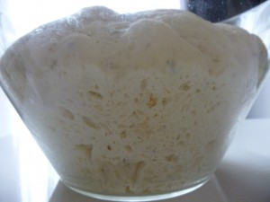
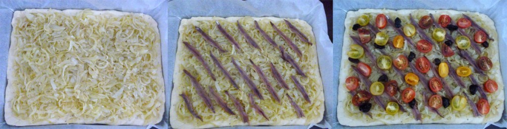
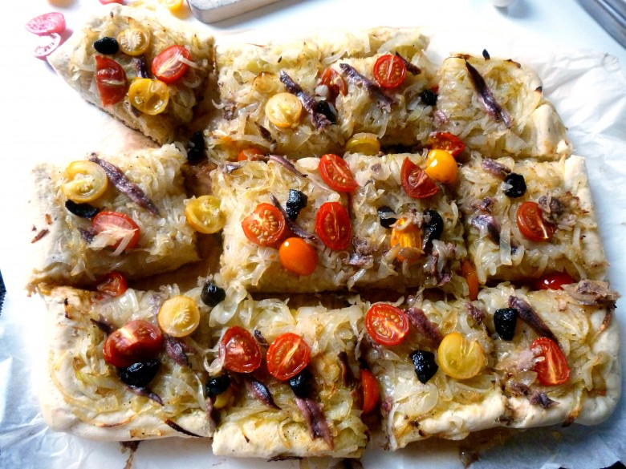
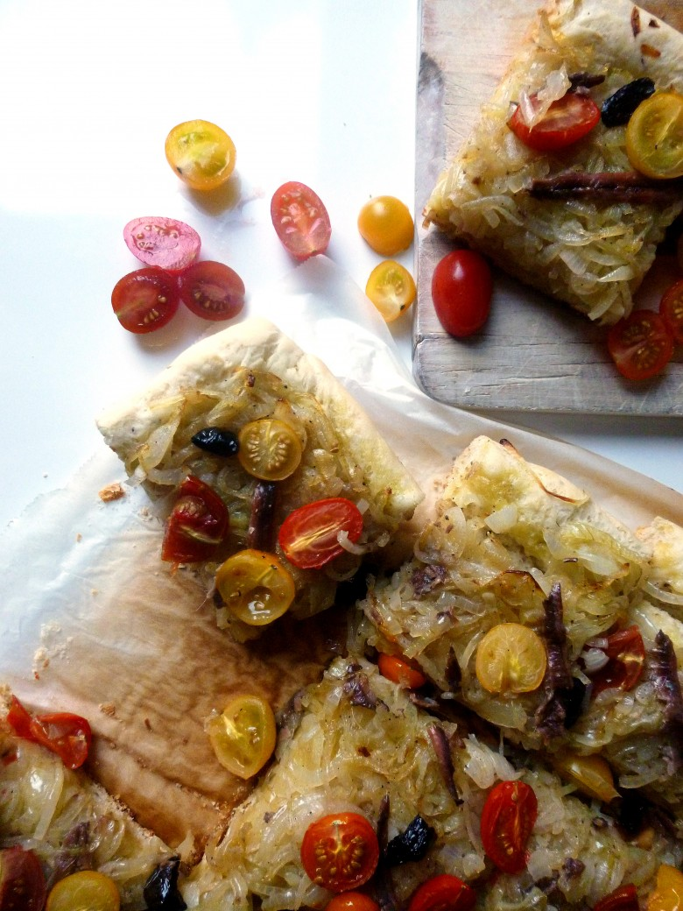

Pissaladière pleine de couleurs

Ici vous trouverez la recette d’une variante de la pissaladière comme je les aime!
Avec le mauvais temps qui persiste j’avais envie d’apporter un peu de couleurs et de gaieté dans nos assiettes!! (Cette recette tombe donc à pic !)
J’ai alors décidé de vous préparer une très très très bonne pissaladière! 🙂
Variante de la pizza, la pissaladière est une spécialité niçoise. Elle est composée d’une pâte à pain parsemée d’un lit d’oignons sur lequel on dépose des anchois, des olives noires (j’adore les olives!) et généralement des câpres (mon chéri ne les aimant pas je n’en met pas!!).
J’aime la pissaladière quand elle est faite avec une pâte bien moelleuse! Comme je vous l’ai dit plus haut, j’ai choisi d’apporter un peu de soleil dans nos assiettes et c’est pourquoi j’ai décidé d’ajouter quelques petites tomates cerises rouges et jaunes sur le dessus 🙂
Je vous laisse maintenant découvrir cette délicieuse recette et si vous décidez de la reproduire n’hésitez pas à me donner vos impressions ou à m’envoyer une photographie !
Ingrédients
- Farine - 500g
- sel - 2càc
- Levure de boulanger - 1 sachet et demi
- Eau tiède - 250ml
- Huile d'olive - 3 càs
- Thym (facultatif) - 2 càc
- Oignons jaunes - 1.5kg
- Anchois - 15
- Olives noires - 10
- Huile d'olive - 3 càs
- Tomates cerises - 200g
- Sel, poivre
Instructions
- Dans une jatte verser la farine, la levure, le sel, le thym et mélanger
- Incorporer l'huile d'olive et l'eau tiède et pétrir la pâte (avec un robot ou à la main)
- Laisser reposer la pâte dans un récipient légèrement huilé pendant 1 bonne heure
- Émincer les oignons
- Faire suer les oignons dans une poêle avec l'huile d'olive en mélangeant régulièrement (compter 30 minutes environ)
- Saler et poivrer en fin de cuisson
- Pendant que les oignons cuisent, couper les tomates cerises en deux .Réserver
- Préchauffer le four à 200°
- Étaler la pâte en lui donnant la forme que vous souhaitez (moi je la façonne de manière à ce qu'elle prenne la forme de la plaque de mon four)
- Repartissez les oignons sur la pâte, les anchois, les olives puis les tomates cerises
- Enfourner la pissaladière pendant 25 min




Les tips de la communauté
Pissaladière colorée et attrayante appréciée pour sa présentation visuelle. L'ajout de tomates apporte de la couleur et de la gaieté à la version traditionnelle. Recette simple et rapide qui donne du plaisir visuel.
Astuces
- L'ajout de tomates apporte de la couleur agréable au plat
- Possibilité de laisser de côté les olives selon les préférences
Variantes suggérées
- de la pissaladière. C’est vrai qu’avec ce temps tristounet, un peu de couleur dans l’assiette apporte de gaieté 😉 Bonne soirée